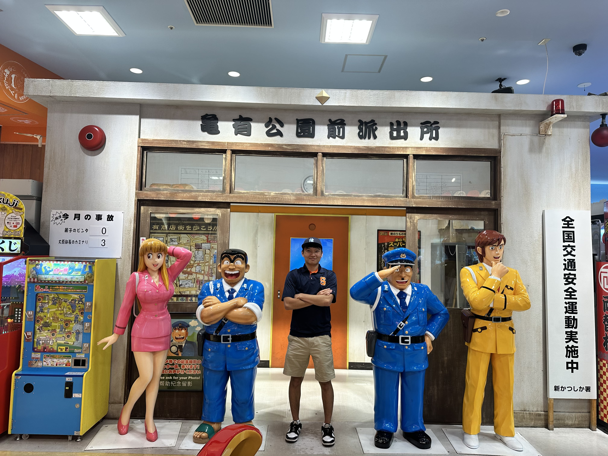

This is the Shinjiku Gyoen a large public park in the city center of tokyo. Even in the busyist citys in Japan there are places to touch grass and enjoy nature.


Japan is for its anime with some of the most sucsesul shows in the world. Places like akihabara are perfect for anime lovers being the mecca for anime, manga and otaku culture.